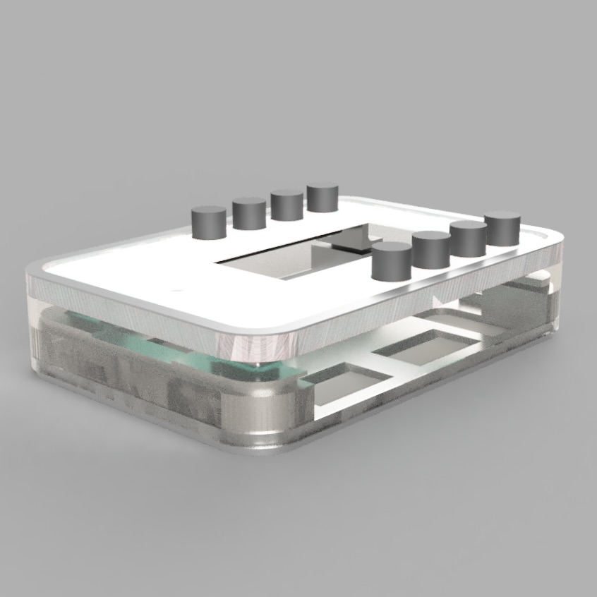

InkHome is my smart home e-ink controller.
The problem with making everything voice and phone controlled is that they are always voice and phone controlled. My solution to this was to do what an engineer does and go full circle and reinvent the light switch. But this is no ordinary light switch; based off a build I saw on YouTube, I wanted to create a device that controls anything that is on my HomeAssistant. With an ESP32, E-ink display, buttons, rotary encoder, and an addressable LED strip, InkHome lets the user control any device or automation in HomeAssistant using the buttons or dial, using MQTT as the backend communication. The E-Ink display adds a sense of class, requiring ambient light to see it, giving the device a more realistic feel. It updates its icons as you use it with live device updates, current Spotify songs, and progress of automations. The LEDs animate around the button that you press and give real-time feedback for volume or song progress. It is then housed in a custom 3D printed snap-close enclosure with satisfying clicky buttons and a white insert in the front plate to diffuse the LEDs, and has a brass outer plate for a premium touch. I genuinely lost hair on this project, having to learn many skills for each and every part, and I am always improving on it, but I am happy with my glorified light switch.